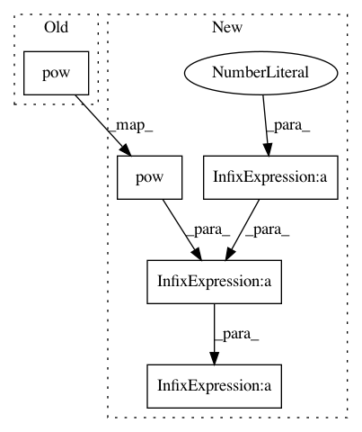

9fe431ed5be2ebe43d08d5506a8f8eb690399a80,vae/main.py,,loss_function,#Any#Any#Any#Any#,83
Before Change
// Kingma and Welling. Auto-Encoding Variational Bayes. ICLR, 2014
// https://arxiv.org/abs/1312.6114
// 0.5 * sum(1 + log(sigma^2) - mu^2 - sigma^2)
KLD_element = mu.pow(2).add_(logvar.exp()).mul_(-1).add_(1).add_(logvar)
KLD = torch.sum(KLD_element).mul_(-0.5)
// Normalise by same number of elements as in reconstruction
KLD /= args.batch_size * 784
After Change
// Kingma and Welling. Auto-Encoding Variational Bayes. ICLR, 2014
// https://arxiv.org/abs/1312.6114
// 0.5 * sum(1 + log(sigma^2) - mu^2 - sigma^2)
KLD = -0.5 * torch.sum(1 + logvar - mu.pow(2) - logvar.exp())
// Normalise by same number of elements as in reconstruction
KLD /= args.batch_size * 784
return BCE + KLD
In pattern: SUPERPATTERN
Frequency: 3
Non-data size: 5
Instances
Project Name: pytorch/examples
Commit Name: 9fe431ed5be2ebe43d08d5506a8f8eb690399a80
Time: 2017-10-01
Author: design@kaixhin.com
File Name: vae/main.py
Class Name:
Method Name: loss_function
Project Name: junyanz/BicycleGAN
Commit Name: 4eb1bb9457d53f557fee68a639ae48d5fb539ce3
Time: 2018-10-25
Author: junyanz@users.noreply.github.com
File Name: models/bicycle_gan_model.py
Class Name: BiCycleGANModel
Method Name: backward_EG
Project Name: deepmind/sonnet
Commit Name: 6436259ca4542e030697c05a72c942aa9aa3ced8
Time: 2019-06-21
Author: petebu@google.com
File Name: sonnet/src/adam.py
Class Name: Adam
Method Name: apply